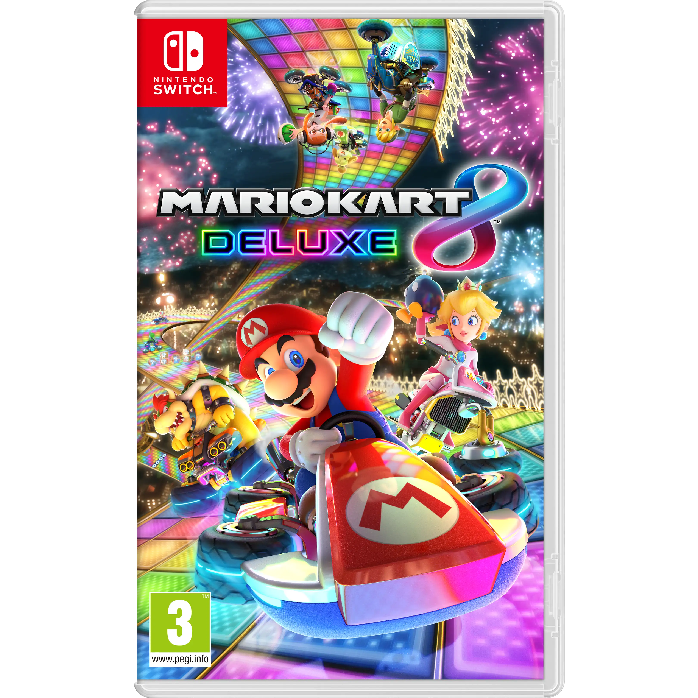

Mario Kart 8 is een racespel dat is ontwikkeld door Nintendo EAD en door Nintendo op 30 mei 2014 werd origineel uitgeven voor de Nintendo Wii U. Later werd het spel opnieuw uitgebracht op de Nintendo Switch op 27 april 2017
€ 59,99 BestellenMeer willen weten over Mario Kart 8 Deluxe? Kijk hier op Wikipedia.